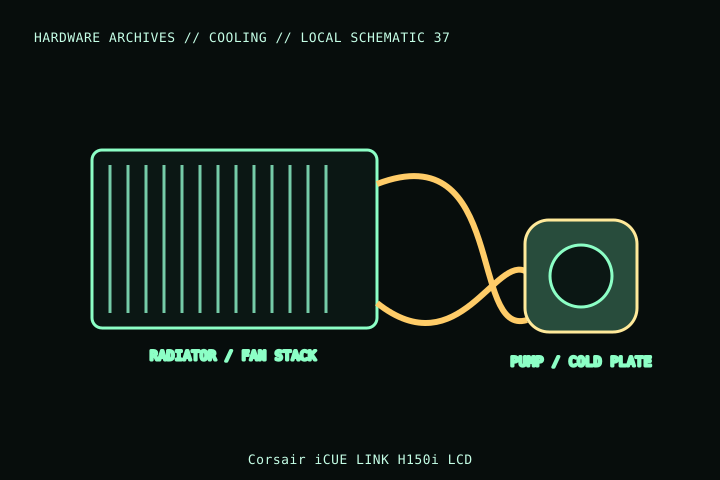

[ INDIVIDUAL COMPONENT // COOLING ]
Corsair iCUE LINK H150i LCD
A 360 mm iCUE LINK H150i LCD liquid cooler with QX120 LINK fans and a pump-head display. Record CW-9061008-WW and distinguish it from other H150i generations, radiator fans, display bundles, and LINK system kits.

MODEL IDENTIFICATION: Verify full model, suffix, SKU, generation, connector, and host-support documentation against the physical item. The record describes only the identified model and does not guarantee host compatibility.
Specifications
| Exact identity | iCUE LINK H150i LCD; Corsair part CW-9061008-WW |
|---|---|
| Radiator | 397 × 120 × 27 mm; allow additional space for the three-fan stack, fittings and tube bend. |
| Included fans | Three QX120 RGB LINK fans; 120 mm fan positions and LINK interconnect. |
| Control/connectors | iCUE LINK system hub/cabling for pump, display and fans; requires supported LINK system and USB/software connection as specified by Corsair. |
| Socket support | Corsair listing includes Intel LGA1700/1200/115x/2066/2011 and AMD AM5/AM4/TR4-family platforms; verify mounting kit and CPU socket generation. |
| Case fit | 360 mm radiator fit is not guaranteed by a nominal mount; check radiator length/thickness, fans, fittings, tubing, GPU, DIMM and board clearances. |
Compatibility and installation
- Verify CW-9061008-WW and use the supplied socket-specific bracket. Confirm platform support and USB/LINK hub availability before installation.
- Check total radiator/fan stack and tube route against the target case; radiator screws must not penetrate or damage the radiator.
- Follow Corsair’s iCUE LINK wiring and USB/power instructions; do not substitute generic PWM or ARGB connections for LINK hardware.
Service notes
Do not open or refill the sealed loop. Inspect for leakage, damage or abnormal pump behavior and power down if suspected. Keep radiator fins clean and do not pull on LINK cables or tubing during service.
Manufacturer references
- Corsair — iCUE LINK H150i LCDManufacturer product/SKU page for H150i LCD and compatible components.
- Corsair — SupportManufacturer setup guides, software, and support.
Model variants and revisions may change specifications or included hardware; the manufacturer’s exact product page/manual and the host manual take precedence.